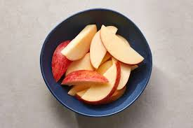

Apple Slices

Description
Fresh apple slices can give you a much needed kick at any time of the day. As a snack or even a whole dinner, apple slices always light up your guests' eyes.
But beware, selection of the right apple is crucial with this recipe. Because selecting is almost the only thing you do when creating apple slices.
Ingredients
- apples
- water
- (lemon juice)
Steps
- If you were too cheap to buy organic apples, wash them!
- Wash them again. Just to be sure. They are trying to poison you!
- Get a small, sharp knife and cut each apple into 6-8 pieces.
- Remove the remains of the center from each piece, because they are yuck.
- If you want preserve the apple's freshness longer, add some drops of lemon juice onto the pieces.
- If you are feeling fance, feel free to arrange the pieces in any pattern you desire.
- You are done! Enjoy the apples with friends or family!
Home